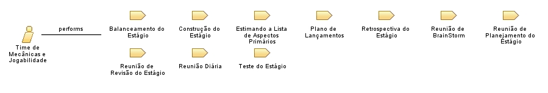

| Role: Time de Mecânicas e Jogabilidade |
 |
|
Relationships
 |
||
| Primary Performs | ||
|---|---|---|
| Modifies |
|
|
Main Description
O Time de Mecânicas e Jogabilidade:
Membros do Time de Mecânicas e Jogabilidade não têm nenhum dos papéis tradicionais da engenharia de software, como programador, designer, testador ou arquiteto. Todos no projeto trabalham juntos para finalizar a lista de atividades que eles coletivamente se comprometeram a realizar durante o Estágio. O Time de Mecânicas e Jogabilidade desenvolve um profundo espírito de camaradagem e o sentimento de que "estamos juntos nisso". |